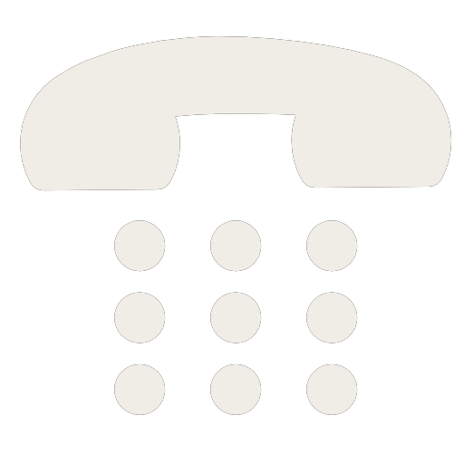

盛广智
基本信息 男
男1994 / 7 / 18
15850225420
vincentsheng@126.com
 上海 · 长宁区
上海 · 长宁区硕士（在读）
工作技能
JavaScript
HTML/CSS
C++
Python
页面重构 Vue.js & React jQuery
Node.js Express框架 MySQL Linux openCV
页面重构 Vue.js & React jQuery
Node.js Express框架 MySQL Linux openCV
自我评价
热爱编程，有一定的的计算机基础，熟悉常见的各类数据结构和算法，对于Web开发的前后端技术栈都有一定的了解。自学了Vue框架和Nodejs平台，并带领团队完成了工程实践项目。对新技术有着较强的好奇心，关注新技术的应用场景和解决了什么问题，具备较强的自学能力。期望在实习期间锤炼技术，成长为有一定经验的开发者。
教育背景
大连理工大学
2012.9.1~2016.7.1
本科,机械设计制造及其自动化
中国科学技术大学
2016.9.1~至今
硕士(在读，预计2018/12毕业),软件系统设计
实习经历
美团点评
2017.7.3 ~ 至今
广告平台/展示广告技术组/前端开发实习生
目前的实习内容包括：1.熟悉公司开发流程，掌握常用开发工具的使用。2.熟悉业务逻辑，处理产品提出的日常需求，如样式修改、增加显示字段、增加小的功能等。3.高级推广通项目的中型需求，编写第三方监控链接组件、接入创意模板系统组件（需配合后端），接入美团账户体系的样式适配。4.“阿拉蕾系统”的综合需求，着手引擎管理页面的开发。
已经完成：样式修改任务5个，增加小功能任务4个，处理bug任务2个，组件开发任务2个，开发完整页面3个。
个人项目
多目的地的旅行路线规划系统
2016 / 10 ~ 2017 / 03
HTML
CSS
JavaScript
Vue.js
MySQL
Express(NodeJS)
工程实践项目，一个用于规划旅行路线的webAPP。可根据用户输入的景点生成最优路线和交通信息，提供了旅行攻略服务。前端框架为Vue.js（含Vue-resource和Vue-router）。后端基于Node.js平台，框架为express（含配套插件）。数据库采用MySQL。服务端部署在Ubuntu云主机上。作为项目负责人，完成了整体设计，前端SPA开发和Node.js后端平台的搭建。
基于墨刀的kingke微信公众号产品原型
2016 / 09 ~ 2016 / 10
UML
墨刀
高级软件工程的课程大作业。使用UML方法分析项目需求，利用墨刀工具创建带交互的kingke产品原型。
基于STEP标准的实体模型分析和特征识别
2015 / 12 ~ 2016 / 6
C++
WebGL
本科毕设，研究STEP标准，编写一个STEP文件解析器。任务包括：理解STEP标准相关协议，解析文件，设计数据结构拓扑关系，表达拓扑关系，通过三角剖分生成STL文件，使用WebGL加载STL文件实现可视化。在同一答辩小组的18位成员中以90分位列第二。
关于我的更多项目，参见Github主页 : github.com/ShengGuangzhi